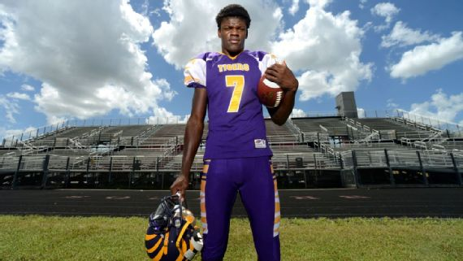
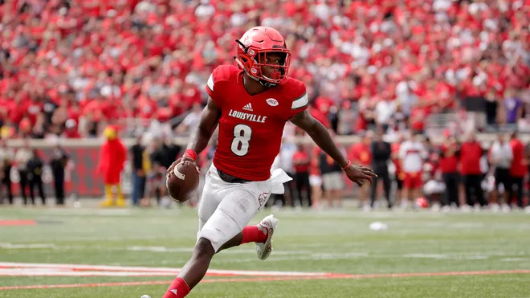
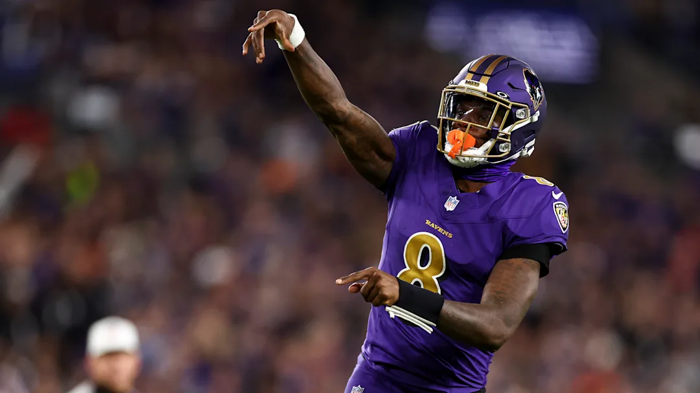

Lamar Demeatrice Jackson Jr. was born on January 7, 1997 in Pompano Beach, Florida. He was raised primarily by his mother along with his three siblings after losing his father and grandmother on the same day in 2005. Jackson's mother, Felicia Jones, has been a major contributor in his football career. Jones was Jackson's first football coach and later became his manager after Jackson chose not to hire an agent upon entering the NFL. Jackson began playing football at Boynton Beach High School during his junior year. Football fans were first introduced to Jackson when one of his high school highlights of him juking a defender to score a rushing touchdown went viral. Coming out of high school, Jackson was rated three stars by ESPN and 247Sports but rated four stars by Rivals.com.
Click here to view Lamar's high school highlights.

When making a decision on what college he would play for Jackson had various options but it was important to him that wherever he went that he would be guaranteed to play quarterback. Jackson ended up committing to Louisville after head coach Bobby Petrino guaranteed to Jackson and his mother that he would only be playing quarterback. Jackson only made eight starts in the 12 games that he played in during his freshman season yet showed various flashes of what he could be. In 2016, Jackson became the starting quarterback of the Louisville Cardinals and would win the Heisman Trophy in his first season at the helm. Behind Jackson, Louisville finished the 2016 season at 9-4 while throwing for 3,543 passing yards and 30 passing touchdowns and rushing for 1,571 yards and 21 touchdowns. He became the first player ever to win the award at Louisville and the youngest player to ever receive the award at only 19 years and 337 days old. Jackson would only play for Louisville one more year before entering the NFL draft. In that junior year Jackson finished third in Heisman voting while leading the Cardinals to an 8-5 record.
Click here to view Lamar's college highlights.

Entering the NFL draft many people around the league speculated that Jackson was not cut out to be an NFL-caliber quarterback. At the combine, various teams wanted him to work out at other positions but Jackson was determined to show that he could be a great quarterback. During the first round of the 2018 NFL draft Jackson sat in the green room almost the whole time as 31 players were picked before him. As it was appearing that he would fall to day two, the Baltimore Ravens traded back into the first round to get the Eagles 32nd overall pick and select Jackson. In his rookie season, Jackson started off as the second-string behind long-time Ravens starter Joe Flacco. He would appear in multiple games to begin the season for certain plays or late game scenarios where he would relieve Joe Flacco but didn’t see his first start until week 11 after Flacco was ruled out due to injury. As Jackson continued to fill in for Flacco, he eventually won the starting job for good. Jackson would take the Ravens to the playoffs but lose to the Chargers in the Wild Card round. In the 2019 offseason, the Ravens would trade away Flacco, cementing Jackson as their next franchise quarterback. In his first full-season, Jackson led the Ravens to the best record in the NFL and won MVP unanimously. However, the Ravens would lose in the divisional round to the Titans. Jackson picked up his first playoff win in the 2020 playoffs and reached his first AFC title game in the 2023 playoffs. In that same 2023 season Jackson won his second MVP award. While battling injuries and experiencing disappointing playoff losses at various points of his career, Jackson still displays promise that he could one day win a championship and be a Hall of Famer.
Click here to view Lamar's NFL highlights.
| Season | Games | Passing Yards | Pass TDs | INTs | Rushing Yards | Rush TDs |
|---|---|---|---|---|---|---|
| 2019 (MVP) | 15 | 3,127 | 36 | 6 | 1,206 | 7 |
| 2023 (MVP) | 16 | 3,678 | 24 | 7 | 821 | 5 |
Instagram: @new_era8
X: @Lj_era8
High School Photo of Lamar: ESPN
College Photo of Lamar: Andy Lyons/Getty Images
NFL Photo of Lamar: Kevin Sabitus/Getty Images